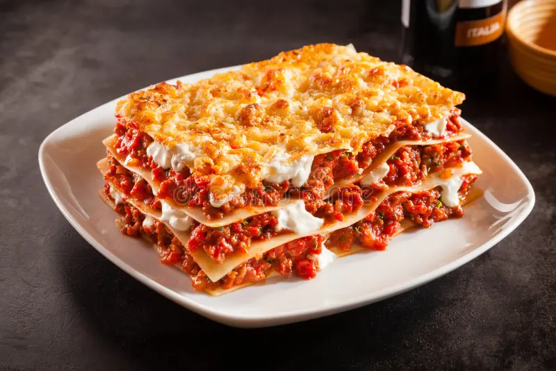

Lasagna

A tasty homemade lasagna
Comfort food doesn't get much more classic than this Italian favourite,
featuring layers of rich beef mince and a creamy sauce
Ingredients
- 1 tbsp olive oil
- 1 onion, diced
- 1 carrot, diced
- 1 celery stalk, diced
- 2 garlic cloves, finely sliced
- 250g beef mince
- 250g pork mince
- 1 tbsp tomato purée
- 400g tin chopped tomatoes
Instructions
-
In a large pan, heat the olive oil over a low heat. Fry the onion,
carrot, celery and garlic for 5 mins, or until softened. Add the mince
and fry on a medium heat until golden. Turn up the heat, pour in the
wine and bubble until reduced. Stir in the tomato purée, chopped
tomatoes and stock. Add in the Worcestershire sauce and simmer for 15
mins, or until the liquid has reduced. Season.
-
Meanwhile, make the white sauce. Melt the butter in a small saucepan
over a low heat and add the flour. Whisk until combined and cook on low
for 1-2 mins. Remove from the heat and gradually whisk in the milk until
you have a loose sauce. Season. Return to a gentle heat and whisk
constantly until the sauce thickens.
-
Preheat the oven to gas 6, 200°C, fan 180°C. Layer up the lasagne in a
baking dish, starting with a third each of the ragu, then the pasta,
then the white sauce. Repeat twice. Top with the Parmesan and mozzarella
then bake in the oven for 40-45 mins, until piping hot and crisp and
bubbling on top. Serve immediately.